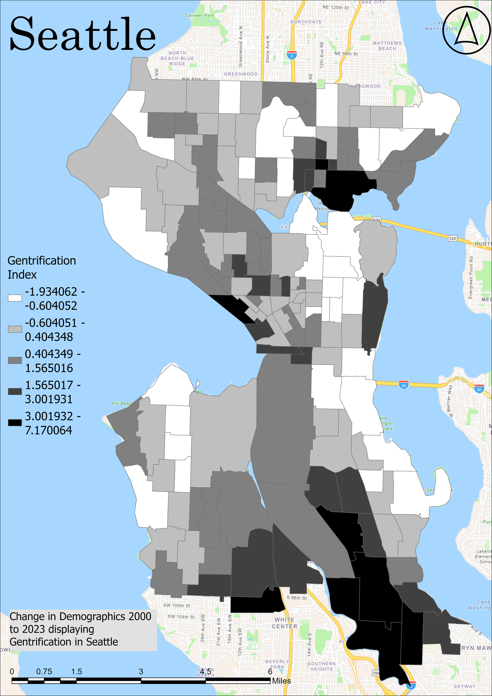
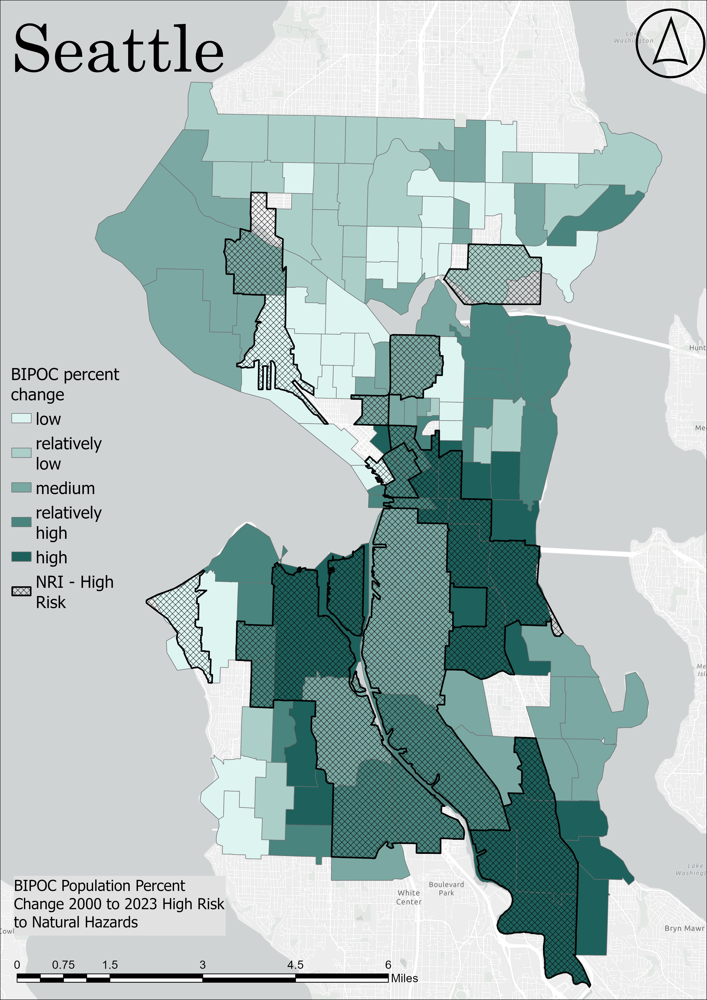

Mya Moore
GIS Analyst | Climate Risk | Hazards | Environmental Justice

I am a GIS analyst and graduate researcher focused on climate displacement, hazard vulnerability, environmental justice, and spatial decision-making. My work centers on how climate change, natural hazards, and social vulnerability shape displacement risk and unequal community resilience.
I use ArcGIS Pro, ArcGIS Online, QGIS, SQL, PostgreSQL, LiDAR analysis, geodatabase design, and spatial statistics to build decision-support tools for hazard mitigation, adaptation planning, and emergency response.
My goal is to apply GIS to real-world environmental problems by producing strong spatial analysis that supports resilience planning, climate adaptation, and equitable outcomes for vulnerable communities.
Master's Thesis Research — Climate Displacement Vulnerability Dashboard
2-Year Thesis Project: Hazard Risk, Social Vulnerability, and Displacement Indicators
This dashboard represents my master's thesis research and more than two years of work focused on climate displacement vulnerability, environmental justice, and hazard exposure. The project evaluates how natural hazards, social vulnerability, and displacement indicators intersect to identify communities at greatest risk of climate-driven displacement.
The research combines GIS spatial analysis, geodatabase design, OLS regression analysis, displacement indicators, hazard mapping, and environmental justice frameworks to better understand where displacement pressures are highest and why certain populations face disproportionate risk.
This dashboard serves as the primary visualization platform for the thesis and supports resilience planning, hazard mitigation, adaptation strategy development, and equitable policy decision-making.
Climate Displacement Risk Mapping: Internal Displacement from Natural Hazards (2023)
This project analyzes internal displacement caused by natural hazards across the United States using the Internal Displacement Monitoring Centre (IDMC) dataset and PostgreSQL database design.
LiDAR-Based Landslide Susceptibility Assessment: Mercer Island, Washington


This project used LiDAR-derived DEMs, slope models, and hillshade analysis to identify landslide susceptibility zones near Mercer Island and the I-90 corridor for hazard mitigation planning.
Hazard Gentrification and Environmental Justice: Seattle




This project examines how historical redlining aligns with race, income, education, hazard exposure, and signs of hazard gentrification across Seattle using ACS demographics, HOLC redlining maps, and hazard risk datasets.
Myawna (Mya) Moore
Denver, Colorado | myammoore14@gmail.com | LinkedIn: linkedin.com/in/myawna-moore
Education
Master of Arts in Geography — Expected June 2026
B.A. Geography, Minor in Marketing
Professional Experience
Nov 2025 – Present
Sept 2024 – Present
March 2025 – June 2025
May 2023 – Aug 2024
May 2022 – Aug 2022
Skills
ArcGIS Pro, ArcGIS Online, ArcMap, QGIS, SQL, PostgreSQL, GIS Database Design, LiDAR Processing, Spatial Analysis, OLS Regression, Environmental Justice Analysis, Hazard Mapping, Dashboard Development, Cartography, Georeferencing, Digitizing, GPS Field Data Processing